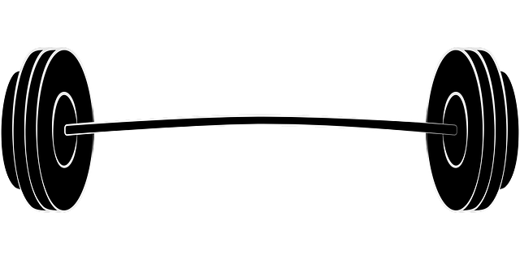
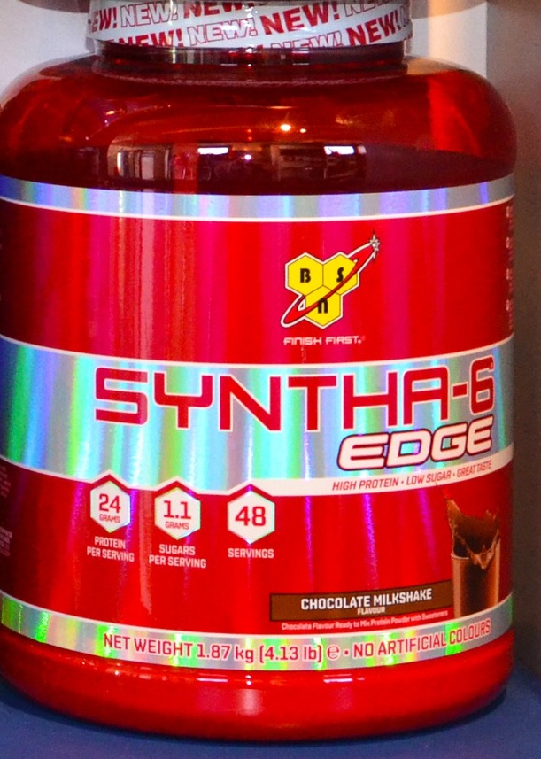
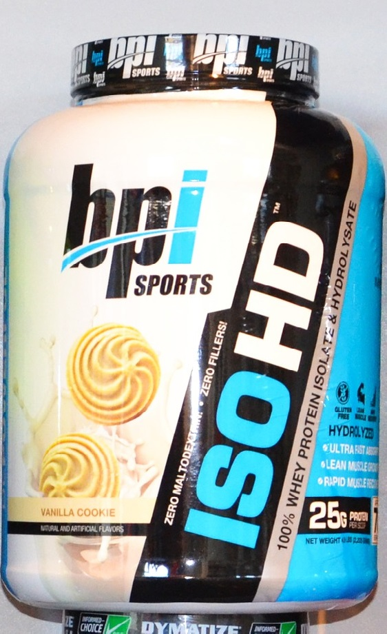
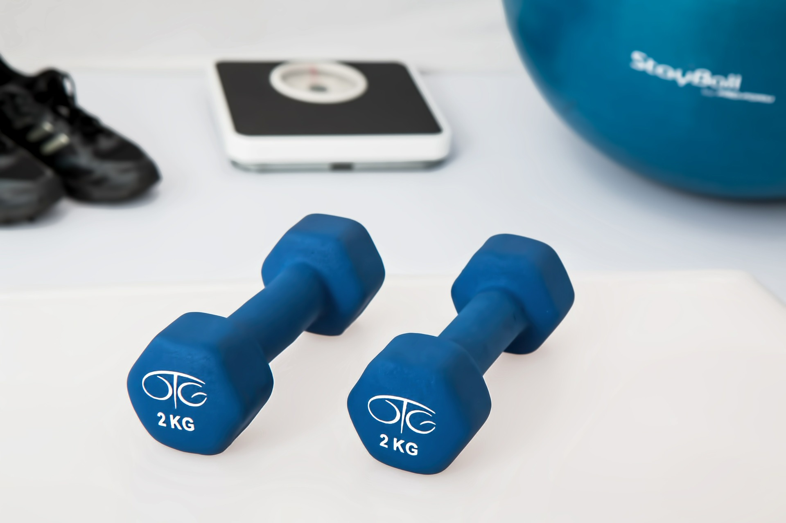

Acasa
Cel mai bun site de suplimente!
Despre noi
Suntem un magazin de proteine online ce vindem atat suplimente nutritive cat si accesorii de fitness.
Suntem un firma ce furnizeaza suplimente nutritive pentru majoritatea salilor de forta din Romania.
Mai jos aveti un link catre un articol ce atesta utilizarea suplimentelor nutritive.
linkIstoria noastra
Suntem infiintati in anul 2022.
Scopul nostru
Ne dorim sa aducem cea mai buna calitate la cel mai bun pret posibil iar clientii sa ajunga la maximul potential genetic.
Galerie foto/video
{kind=link}
Creatina Suplimente masa musculara Suplimente de slabit
Produse
Proteine
Reducere de 30% 50% la toata gama de proteine
Arome
- Ciocolata
- Capsuni
- Fara aroma
- Caramel
Arome
- Ciocolata
- Capsuni
- Caramel
Arome
- Ciocolata
- Capsuni
- Fara aroma
Aminoacizi
1+1 gratis la toata gama de aminoacizi
Arome aminoacizi
- Ciocolata
- Capsuni
- Caramel
- Fructe tropicale
- Mango
- Aminoacizi:
- BCAA
- Citrulina
- Creatina
- Beta-alanina
- Taurina
- Cofeina
- Arginina
Vitamine
Arome Vitamine
- Ciocolata
- Capsuni
- Caramel
- Fructe tropicale
- Mango
- Vitamine pastile
- Vitamine praf
- Multivitamine
- Minerale
Accesorii
Gantere, Haltere si imbracaminte sport.
Informatii despre produsele noastre
Un citat despre beneficiile creatinei:
1. Creatina monohidrata este cea mai sigura Multe studii au aratat ca monohidratul de creatina efecte este foarte sigur de consumat. Societatea Internationala de Nutritie Sportiva a concluzionat recent: „Nu exista dovezi stiintifice convingatoare ca utilizarea pe termen scurt sau lung a creatinei monohidrat are efecte daunatoare”. Studiile au raportat ca consumul de monohidrat timp de doi pana la cinci ani pare sa fie sigur, fara a avea efecte adverse documentate. Acest supliment pare sa fie sigur si in doze mai mari. Desi o doza zilnica tipica este de 3–5 grame, oamenii au luat doze de pana la 30 de grame pe zi, timp de pana la cinci ani, fara probleme de siguranta raportate. Singurul efect secundar comun este cresterea in greutate. Totusi, acest lucru nu trebuie privit ca un lucru rau. Creatina efecte creste continutul de apa al celulelor musculare si poate ajuta si la cresterea masei musculare. Orice crestere in greutate pe care o puteti experimenta ca urmare a utilizarii acestui supliment se datoreaza cresterii apei sau muschilor, nu a grasimilor. Desi alte forme de creatina, altele decat monohidratul, pot fi, de asemenea, sigure pentru consum, exista foarte putine dovezi stiintifice care confirma acest lucru. 2. Creatina are cel mai mare suport stiintific Marea majoritate a celor peste 1.000 de studii asupra creatinei au utilizat forma monohidratata. Aproape toate beneficiile pentru sanatate si exercitii fizice ale administrarii de suplimente de creatina au fost demonstrate in studii cu monohidrat. Aceste beneficii includ castigul muscular, performanta imbunatatita a exercitiului si posibilele beneficii ale creierului. Studiile au aratat ca acest supliment poate creste castigurile de forta dintr-un program de antrenament in greutate cu aproximativ 5-10%, in medie. creatina efecte si beneficii 3. Creatina monohidrata imbunatateste performanta Creatina monohidrat exercita o varietate de efecte asupra sanatatii si a performantei la exercitii fizice, inclusiv forta crescuta, puterea si masa musculara. Mai multe studii au comparat creatina monohidrata beneficii si alte forme pentru efectele lor asupra performantei exercitiului fizic. Creatina efecte si beneficii pare a fi mai buna decat esterul etilic si formele lichide ale creatinei. Un studiu a descoperit ca monohidratul creste continutul de creatina in sange si muschi mai bine decat forma de ester etilic. Un alt studiu a raportat ca performanta la ciclism a participantilor a crescut cu 10% atunci cand au luat o pulbere monohidratata, dar nu au crescut atunci cand au luat creatina lichida. Cu toate acestea, cateva studii mici, initiale, au sugerat ca formele de chemina tamponate si de chelat de magneziu pot fi la fel de eficiente ca monohidratul la imbunatatirea performantei la efort. Creatina efecte Mai exact, aceste forme pot fi la fel de eficiente pentru cresterea rezistentei la presa pe banc si a productiei de energie in timpul ciclismului. Nu exista studii adecvate care au comparat formele de monohidrat si clorhidrat. In general, pur si simplu nu exista suficiente dovezi stiintifice pentru a concluziona ca ar trebui sa luati orice forma de creatina, in afara de monohidrat. In timp ce unele forme noi pot fi promitatoare, cantitatea de dovezi pentru monohidrat este mult mai impresionanta decat dovezile pentru toate celelalte forme.